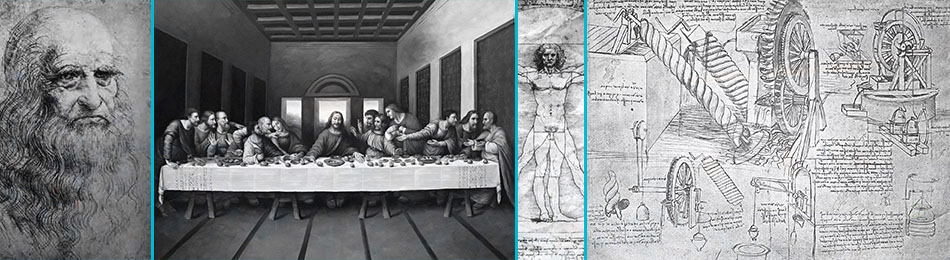
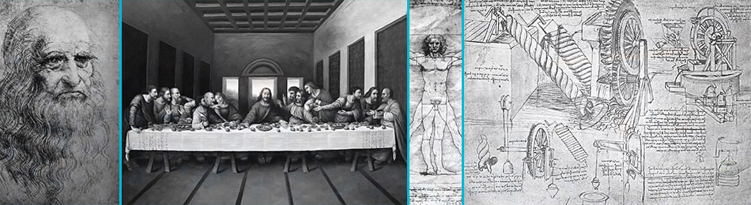

Leonardo Da Vinci
Leonardo di ser Piero da Vinci 15 April 1452 – 2 May 1519) was an Italian polymath, painter, sculptor, architect, musician, mathematician, engineer, inventor, anatomist, geologist, cartographer, botanist, and writer. He is widely considered to be one of the greatest painters of all time and perhaps the most diversely talented person ever to have lived. His genius, perhaps more than that of any other figure, epitomized the Renaissance humanist ideal. Leonardo has often been described as the archetype of the Renaissance Man, a man of "unquenchable curiosity" and "feverishly inventive imagination". According to art historian Helen Gardner, the scope and depth of his interests were without precedent and "his mind and personality seem to us superhuman, the man himself mysterious and remote".Marco Rosci states that while there is much speculation about Leonardo, his vision of the world is essentially logical rather than mysterious, and that the empirical methods he employed were unusual for his time.
Born out of wedlock to a notary, Piero da Vinci, and a peasant woman, Caterina, in Vinci in the region of Florence, Leonardo was educated in the studio of the renowned Florentine painter Verrocchio. Much of his earlier working life was spent in the service of Ludovico il Moro in Milan. He later worked in Rome, Bologna and Venice, and he spent his last years in France at the home awarded him by Francis I.
Leonardo was, and is, renowned primarily as a painter. Among his works, the Mona Lisa is the most famous and most parodied portrait and The Last Supper the most reproduced religious painting of all time, with their fame approached only by Michelangelo's The Creation of Adam. Leonardo's drawing of the Vitruvian Man is also regarded as a cultural icon, being reproduced on items as varied as the euro coin, textbooks, and T-shirts. Perhaps fifteen of his paintings have survived, the small number because of his constant, and frequently disastrous, experimentation with new techniques. Nevertheless, these few works, together with his notebooks, which contain drawings, scientific diagrams, and his thoughts on the nature of painting, compose a contribution to later generations of artists rivalled only by that of his contemporary, Michelangelo.
Leonardo is revered for his technological ingenuity. He conceptualised flying machines, an armoured vehicle, concentrated solar power, an adding machine, and the double hull, also outlining a rudimentary theory of plate tectonics. Relatively few of his designs were constructed or were even feasible during his lifetime, but some of his smaller inventions, such as an automated bobbin winder and a machine for testing the tensile strength of wire, entered the world of manufacturing unheralded. He made substantial discoveries in anatomy, civil engineering, optics, and hydrodynamics, but he did not publish his findings and they had no direct influence on later science.
Video
| Born | Leonardo di ser Piero da Vinci April 15 1452 Vinci Republic of Florence (present-day Italy) |
| Died | May 2, 1519 (aged 67) Amboise Kingdom of France |
| Known for | Diverse fields of the arts and sciences |
| Notable work | Mona Lisa The Last Supper The Vitruvian Man Lady with an Ermine |
| Style | High Renaissance |
| Signature |